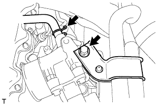
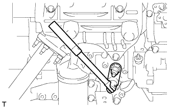

БЛОК ДВИГАТЕЛЯ > СНЯТИЕ |
| 1. REMOVE NO. 1 COMPRESSOR MOUNTING BRACKET |
 |
Remove the 4 bolts and compressor mounting bracket.
| 2. REMOVE CRANKSHAFT PULLEY |
Using SST, remove the pulley bolt.
| *a | Hold |
| *b | Turn |
 |
Using SST, remove the pulley.
| *a | Hold |
| *b | Turn |
| 3. REMOVE TIMING BELT COVER |
 |
Remove the 11 bolts, washers, timing belt cover, and 2 gaskets.
| 4. SET NO. 1 CYLINDER TO TDC/COMPRESSION |
 |
Using the crankshaft pulley bolt, align the groove of the crankshaft pulley with the timing pointer by turning the crankshaft clockwise.
| *1 | Timing Mark |
 | Turn |
 |
Check that the timing marks of the camshaft timing pulley and No. 2 timing belt cover are aligned.
| *1 | Timing Mark |
| 5. REMOVE TIMING BELT |
Turn the crankshaft 90° counterclockwise, and align the timing mark of the crankshaft timing pulley with the protrusion of the timing belt case.
| Turn |
 |
Loosen the No. 1 timing belt idler bolt (A), and shift the idler to the left as far as possible.
| Pry |
 | Move |
Tighten the No. 1 timing belt idler bolt (A), and then relieve the timing belt tension.
Remove the timing belt.
| 6. REMOVE CRANKSHAFT TIMING PULLEY |
 |
Using a screwdriver, remove the crankshaft timing pulley.
| 7. REMOVE INTAKE FLANGE |
|  |
Remove the bolt and disconnect the PCV hose and heater hose bracket.
Disconnect the manifold absolute pressure sensor connector.
 |
Remove the 3 nuts, intake flange and gasket.
| 8. REMOVE DIESEL THROTTLE BODY |
 |
Disconnect the throttle open switch connector.
Remove the 2 bolts and disconnect the wire harness bracket.
 |
Disconnect the throttle control motor connector.
Remove the diesel throttle body and gasket.
| 9. REMOVE INJECTION PIPE SET |
 |
Using a union nut wrench, loosen the 8 union nuts of the 4 injection pipes.
| *1 | Union Nut Wrench |
| *a | for Injection Nozzle Side |
| *b | for Injection Pump Side |
Remove the 2 nuts, 2 upper pipe clamps and 4 injection pipes with 2 lower pipe clamps.
| 10. REMOVE NO. 1 GLOW PLUG CONNECTOR |
 |
Remove the nut, No. 2 glow plug resistor insulator and washer and disconnect the wire harness.
Remove the 4 screw grommets and 4 nuts.
Remove the No. 1 glow plug connector and No. 1 glow plug resistor insulator.
| 11. REMOVE NOZZLE LEAKAGE PIPE ASSEMBLY |
Disconnect the fuel hose from the leakage pipe.
Remove the 4 nuts, leakage pipe and 4 ring packing washers.
| 12. REMOVE NOZZLE HOLDER & NOZZLE SET |
Using SST, remove the 4 injection nozzles, 4 injection nozzle seats and 4 injection nozzle seat gaskets.
| 13. REMOVE GLOW PLUG ASSEMBLY |
Using a 12 mm deep socket wrench, remove the 4 glow plugs.
| 14. REMOVE INJECTION PUMP DRIVE PULLEY |
 |
Using SST, remove the pulley nut.
Using SST, remove the drive pulley.
| 15. REMOVE INJECTION PUMP ASSEMBLY |
 |
Disconnect the 5 connectors and detach the wire harness clamp.
Disconnect the 3 fuel hoses.
Remove the 3 bolts and injection pump stay.
Remove the 2 nuts and injection pump.
| 16. REMOVE CRANK POSITION SENSOR |
 |
Disconnect the crankshaft position sensor connector.
Remove the bolt and crankshaft position sensor.
| 17. REMOVE WATER OUTLET HOUSING |
Remove the 3 bolts, outlet housing and gasket.
| 18. REMOVE INTAKE MANIFOLD |
Remove the 6 bolts, 2 nuts, intake manifold and gasket.
| 19. REMOVE WATER BY-PASS HOSE UNION |
Remove the water by-pass hose union.
| 20. REMOVE NO. 1 GENERATOR BRACKET |
 |
Remove the 3 bolts and No. 1 generator bracket.
| 21. REMOVE PUMP BRACKET |
Remove the 3 bolts and pump bracket.
| 22. REMOVE ENGINE OIL LEVEL DIPSTICK GUIDE |
Remove the dipstick.
Remove the 2 bolts and dipstick guide.
Remove the O-ring from the dipstick guide.
| 23. REMOVE NO. 1 FRONT ENGINE MOUNTING BRACKET RH |
 |
Remove the 4 bolts and engine mounting bracket.
| 24. REMOVE VACUUM PUMP OIL INLET HOSE |
 |
Remove the union bolt and gasket, and then disconnect the vacuum pump oil inlet hose from the cylinder block.
| 25. REMOVE UNION |
Remove the union from the cylinder block.
| 26. REMOVE VACUUM PUMP OIL OUTLET HOSE |
Remove the bolt, 2 gaskets and vacuum pump outlet hose.
| 27. REMOVE NO. 1 FRONT ENGINE MOUNTING BRACKET LH |
Remove the 4 bolts and engine mounting bracket.
| 28. REMOVE NO. 1 EXHAUST MANIFOLD HEAT INSULATOR |
Remove the 3 bolts and insulator.
| 29. REMOVE EXHAUST MANIFOLD |
 |
Remove the 2 nuts, 6 bolts and manifold.
Remove the gasket.
| 30. REMOVE OIL FILTER BRACKET SUB-ASSEMBLY |
Remove the 10 bolts, 2 nuts, oil filter bracket and gasket.
| 31. REMOVE ENGINE OIL PRESSURE SWITCH ASSEMBLY |
|  |
Using a 24 mm deep socket wrench, remove the oil pressure switch.